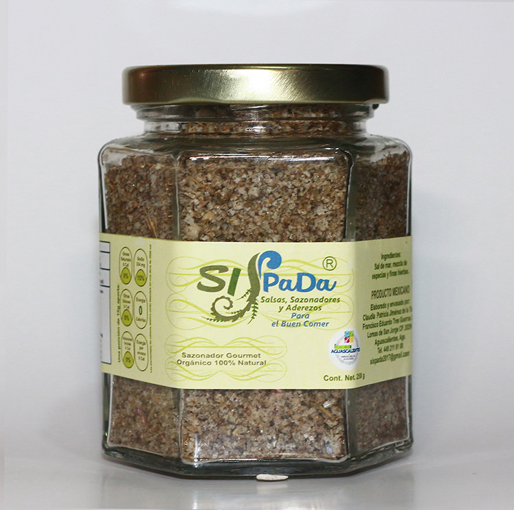

Sazonador Gourmet
Elaborado artesanalmente con sal de mar 100% orgánica con menor contenido en sodio, mezcla de hierbas y especias finas para brindar un toque especial a cualquier alimento dándole ese sabor Gourmet que buscan los paladares más exigentes.